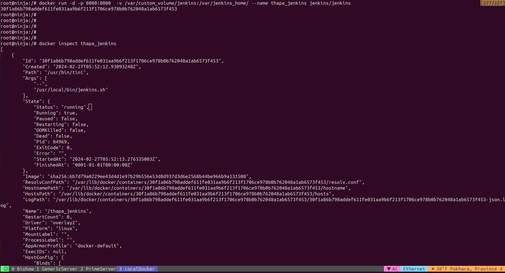

Docker
Installation
The core of Docker is made of the Docker engine, a single-host software daemon that allows you to create and manage containers. Before diving into using Docker, you need to install the Docker engine on a host, either your desktop, laptop, or a server.
A Dockerfile is a manifest that describes how to build a container image. This is a core concept in Docker.
Abstract
Docker, Docker Compose, and Docker Swarm are all related tools in the Docker ecosystem, but they serve different purposes:
-
Docker:
Docker is a platform and tool for building, distributing, and running
containers. Containers allow developers to package an application with all of its dependencies into a standardized unit for software development. Docker provides the tools needed to create and manage these containers efficiently. With Docker, you can build container images, run containers from those images, and manage container lifecycles. -
Docker Compose:
Docker Compose is a tool for defining and running
multi-containerDocker applications. It allows you to use a YAML file to configure the services that make up your application, including their dependencies, networking, and volumes. Docker Compose then takes care of starting, stopping, and managing all of these containers as a single application stack. It simplifies the process of managing complex applications composed of multiple interconnected containers. -
Docker Swarm:
Docker Swarm is Docker's native clustering and
orchestration tool. It allows you to create and manage a cluster of Docker nodes, turning them into a single virtual Docker engine. Docker Swarm enables you to deploy and manage multi-container applications across multiple hosts, providing features such as service scaling, rolling updates, and high availability. It simplifies the management of containerized applications at scale and provides built-in features for load balancing and service discovery.
In summary:
Docker: The core platform for building, distributing, and running containers.Docker Compose: A tool for defining and managing multi-container applications using a YAML configuration file.Docker Swarm: Docker's native clustering and orchestration tool for managing multi-container applications across multiple hosts.
Clarifying Docker terms
Abstract
Docker Registry
A Docker Registry is a place where Docker images can be stored in order to be publicly or privately found, accessed, and used by software developers worldwide for quickly crafting fresh and composite applications without any risks. Because all the stored images will have gone through multiple validations, verifications, and refinements, the quality of those images is really high. You can dispatch your Docker image to the registry so that it is registered and deposited using the docker push subcommand. You can download Docker images from the registry using the docker pull subcommand.
Docker Registry could be hosted by a third party as a public or private registry, like one of the following registries:
- Docker Hub
- Quay
- Google Container Registry
- AWS Container Registry
Every institution, innovator, and individual can have their own Docker Registry to stock up their images for internal and/or external access and usage.
nginx (Engine X) web server
Abstract
/etc/nginx/nginx.conf
The server_name directive in Nginx should specify only the domain name or names without the protocol (e.g., http://). Therefore, you need to modify your configuration like this:
http {
server {
listen 9000;
server_name generic-info.ispl.com.np;
location / {
# Jenkins running on port 9000
proxy_pass http://10.114.0.175:9000;
proxy_set_header Host $host;
proxy_set_header X-Real-IP $remote_addr;
proxy_set_header X-Forwarded-For $proxy_add_x_forwarded_for;
proxy_set_header X-Forwarded-Proto $scheme;
}
}
server {
listen 8080;
server_name generic-info.ispl.com.np;
location / {
# Portainer running on port 8080
proxy_pass http://10.114.0.175:8080;
proxy_set_header Host $host;
proxy_set_header X-Real-IP $remote_addr;
proxy_set_header X-Forwarded-For $proxy_add_x_forwarded_for;
proxy_set_header X-Forwarded-Proto $scheme;
}
}
}
After making this change, you should test the configuration to ensure there are no syntax errors:
If the test is successful, reload Nginx to apply the changes:
This should resolve the issue, and Nginx should be able to start without errors.
Using Paths to Differentiate Services
If Hostnames Are Not Available
If you cannot use different hostnames, you will need to use different ports or subpaths as described in previous responses.
http {
server {
listen 80;
# No server_name specified
location /jenkins/ {
# Jenkins running on port 9000
proxy_pass http://10.114.0.175:9000/;
proxy_set_header Host $host;
proxy_set_header X-Real-IP $remote_addr;
proxy_set_header X-Forwarded-For $proxy_add_x_forwarded_for;
proxy_set_header X-Forwarded-Proto $scheme;
rewrite ^/jenkins(.*) $1 break;
}
location /portainer/ {
# Portainer running on port 8080
proxy_pass http://10.114.0.175:8080/;
proxy_set_header Host $host;
proxy_set_header X-Real-IP $remote_addr;
proxy_set_header X-Forwarded-For $proxy_add_x_forwarded_for;
proxy_set_header X-Forwarded-Proto $scheme;
rewrite ^/portainer(.*) $1 break;
}
}
}
Explanation
- Single Server Block: Only one server block is needed, listening on port 80.
- Path-Based Routing: Requests to /jenkins are routed to Jenkins running on port 9000, and requests to /portainer are routed to Portainer running on port 8080.
- Rewrite Directive: The rewrite directive ensures that the backend service receives the correct path.
Access URLs
- Jenkins:
http://<your-server-ip>/jenkins - Portainer:
http://<your-server-ip>/portainer
same port
To serve both Jenkins and Portainer on the same port (port 80) without using subpaths like /jenkins and /portainer, you need to use different hostnames. Each service will be accessible via a different domain or subdomain. This approach requires DNS configuration to resolve different hostnames to your server's IP address.
http {
server {
listen 80;
server_name jenkins.example.com;
location / {
# Jenkins running on port 9000
proxy_pass http://10.114.0.175:9000;
proxy_set_header Host $host;
proxy_set_header X-Real-IP $remote_addr;
proxy_set_header X-Forwarded-For $proxy_add_x_forwarded_for;
proxy_set_header X-Forwarded-Proto $scheme;
}
}
server {
listen 80;
server_name portainer.example.com;
location / {
# Portainer running on port 8080
proxy_pass http://10.114.0.175:8080;
proxy_set_header Host $host;
proxy_set_header X-Real-IP $remote_addr;
proxy_set_header X-Forwarded-For $proxy_add_x_forwarded_for;
proxy_set_header X-Forwarded-Proto $scheme;
}
}
}
Different Port
http {
server {
listen 80;
# No server_name specified
location / {
# Jenkins running on port 9000
proxy_pass http://10.114.0.175:9000;
proxy_set_header Host $host;
proxy_set_header X-Real-IP $remote_addr;
proxy_set_header X-Forwarded-For $proxy_add_x_forwarded_for;
proxy_set_header X-Forwarded-Proto $scheme;
}
}
server {
listen 81;
# No server_name specified
location / {
# Portainer running on port 8080
proxy_pass http://10.114.0.175:8080;
proxy_set_header Host $host;
proxy_set_header X-Real-IP $remote_addr;
proxy_set_header X-Forwarded-For $proxy_add_x_forwarded_for;
proxy_set_header X-Forwarded-Proto $scheme;
}
}
}
Docker Images
Abstract
# List Docker images
$ docker images
# Remove Docker image by ID
$ docker rmi <image_id>
# Remove Docker image by repository and tag
$ docker rmi <repository_name>:<tag>
# Forcefully remove images
$ docker rmi -f <image_id>
# or
$ docker rmi --force <image_id>
Create Docker Image
When working with Docker, you typically create an image first and then use that image to create containers.
-
Create Image:
An image is like a template that contains the filesystem and configuration needed to run a container. You define an image using a
Dockerfile, which specifies the instructions to build the image. You use the docker build command to create an image from a Dockerfile. -
Create Container:
Once you have an image, you can create one or more containers from it. A container is a running instance of an image. You use the docker run command to create and start a container from an image. Each container runs in isolation from other containers but can communicate with them if configured to do so.
Here's a basic sequence of commands:
- Create the image:
- Run a container based on that image:
So, to summarize, first, you build an image using a Dockerfile, then you create and run containers based on that image.
Dangling images are layers that have no relationship to any tagged images. They no longer serve a purpose and consume disk space.
Dangling images are created while creating new build of a image without renaming/updating the version of the image. So that the old image are converted into dangling images.
# List Dangling images
$ docker images -f dangling=true
# Remove Dangling images
$ docker rmi $(docker images -f dangling=true -q)
##
# To remove all dangling images.
$ docker image prune
# To remove all images which aren't used by existing containers, use the -a flag:
$ docker image prune -a
# To remove all stopped containers.
$ docker container prune
# To removes stopped containers older than 24 hours:
$ docker container prune --filter "until=24h"
# To remove all volumes not used by at least one container.
$ docker volume prune
# To remove all networks not used by at least one container.
$ docker network prune
# The docker system prune command is a shortcut that prunes images, containers, and networks.
# Volumes aren't pruned by default, and you must specify the --volumes flag for docker system prune to prune volumes.
# To prune images, containers and network
$ docker system prune
# To also prune volumes, add the --volumes flag:
$ docker system prune --volumes
Docker Container
Abstract
Create Docker Container
example of creating a new container:
# syntax
# 1. Run a new container with the new image:
$ docker run --name <container_name> -d <new_image_name>
# 2. Stop the existing container:
$ docker stop <container_name_or_id>
# 3. Remove the existing container (optional):
$ docker rm <container_name_or_id>
# example
$ docker run --name my-container -d my-image
--name my-containersets the name of the container to my-container.-druns the container in detached mode (in the background).my-imageis the name of the image from which to create the container.
This command will create a new container using the specified image. If the image is not available locally, Docker will automatically pull it from a registry like Docker Hub before creating the container.
After running the command, you can use docker ps to see the list of running containers.
Check the IP Address of the Docker Container
Then try accessing the site using curl with the IP address and the mapped port (8082 in this case).
if you want to check if a container named my_container is using any volumes:
docker run -d \
-p 8080:8080 \
-p 50000:50000 \
--name jenkins \
--restart unless-stopped \
-v generic-volume:/var/jenkins_home/generic-volume \
-v /var/run/docker.sock:/var/run/docker.sock \
jenkins/jenkins:lts
docker run -d \
-p 8080:8080 \
-p 50000:50000 \
--name jenkins \
--restart unless-stopped \
-v generic-volume:/var/jenkins_home/generic-volume \
-v /var/run/docker.sock:/var/run/docker.sock \
my-jenkins
Docker Volume
Abstract
Recap Docker Volume
In a previous chapter, we used the "-v" option to a "docker run" command to declare that we wanted to use a volume with a container. The abbreviated "-v" option is exactly the same as the "--volume" option. However, the newer and preferred way to mount volumes in a container is the "--mount" option. Docker recommends that you use "--mount" instead of "-v" or "--volume", as their research has shown "--mount" is easier to use. However, if you are an old Docker user like myself, then you're probably accustomed to using and seeing "-v". In any case, either works, but we will focus on "--mount", as its the recommended way.
Portainer
Abstract
Docker pull Command
After installing Portainer in Docker on a Linux server, you can run it by executing the Docker run command with appropriate options. Here's how you can do it:
-
Open a Terminal:
Log in to your Linux server via SSH or open a terminal window if you're working directly on the server.
-
Run Portainer Container:
Use the following command to start the Portainer container:
bashsudo docker run -d -p 9000:9000 --name portainer --restart always -v /var/run/docker.sock:/var/run/docker.sock portainer/portainer-ceExplanation of options:
-
-d: Run the container in detached mode (in the background). -
-p 9000:9000: Map port 9000 on the host to port 9000 inside the container. This allows you to access Portainer's web interface on port 9000 of your server. -
--name portainer: Assign the name "portainer" to the container. -
--restart always: Ensure that the container restarts automatically if it stops. -
-v /var/run/docker.sock:/var/run/docker.sock: Mount the Docker socket inside the container, allowing Portainer to communicate with the Docker daemon.
-
-
Verify Portainer Container:
You can verify that the Portainer container is running by executing the following command:
This command will list all running containers, and you should see an entry for the Portainer container.
-
Access Portainer Web Interface:
Once the Portainer container is running, you can access its web interface by opening a web browser and navigating to:
Replace
your_server_ipwith theIP addressordomain nameof your Linux server. -
Set up Portainer:
When you access the Portainer web interface for the first time, you'll be prompted to set up an admin user and password. Follow the on-screen instructions to complete the setup process.
That's it! You have now successfully run Portainer in Docker on your Linux server, and you can start managing your Docker environment through the Portainer web interface.
Portainer with Docker
To use Docker Swarm mode with Portainer, you need to set up a Docker Swarm cluster and then deploy Portainer as a service within the Swarm. Here's a step-by-step guide on how to do this:
-
Initialize Docker Swarm:
If you haven't already initialized Docker Swarm on your Docker host, you can do so by running the following command in your terminal:
This command initializes Docker Swarm mode on the current Docker host and creates a Swarm manager node.
-
Deploy Portainer as a Service:
Once Docker Swarm is initialized, you can deploy Portainer as a service within the Swarm. Run the following command to create a Portainer service:
bashdocker service create \ --name portainer \ --publish 9000:9000 \ --constraint 'node.role == manager' \ --mount type=bind,src=/var/run/docker.sock,dst=/var/run/docker.sock \ portainer/portainer-ceThis command creates a new service named "portainer" using the Portainer Community Edition (CE) image. It publishes Portainer's web interface on port 9000 and mounts the Docker socket from the host into the Portainer container, allowing Portainer to interact with the Docker API.
-
Access Portainer Web Interface:
Once the Portainer service is deployed, you can access the Portainer web interface by navigating to http://
:9000 in your web browser. If you're running Portainer locally, you can use http://localhost:9000. -
Set Up Portainer:
Follow the on-screen instructions to complete the initial setup of Portainer. You'll be prompted to create an admin user, choose a password, and specify whether you want to manage the local Docker environment or a remote Docker Swarm cluster.
-
Connect Portainer to Docker Swarm:
If you're managing a remote Docker Swarm cluster, you'll need to specify the Swarm endpoint URL and optionally provide authentication credentials. This allows Portainer to communicate with the Docker Swarm API and manage services, nodes, and other resources within the cluster.
-
Start Managing Services:
Once connected, you can start managing Docker Swarm services, nodes, stacks, and other resources using the Portainer web interface. You can create, scale, update, and monitor services, deploy applications using stacks, and perform various administrative tasks.
By following these steps, you can set up and use Docker Swarm mode with Portainer to manage your containerized applications at scale. Make sure to consult the official Portainer documentation for more detailed instructions and best practices.
Jenkins
Abstract
Docker Pull Command
After pulling the Docker Jenkins image onto your Linux server, you can start using Jenkins by running the container and accessing its web interface. Here's how you can do it:
-
Run Jenkins Container:
Use the following command to start the Jenkins container:
Explanation of options:
-
-d: Run the container in detached mode (in the background). -
-p 8080:8080 -p 50000:50000: Map port 8080 on the host to port 8080 inside the container for accessing Jenkins web interface, and map port 50000 for Jenkins agent communication. -
--name jenkins: Assign the name "jenkins" to the container. -
jenkins/jenkins:lts: This specifies the Jenkins Docker image to use. In this case, we're using the LTS (Long-Term Support) version.
-
-
Access Jenkins Web Interface:
Once the Jenkins container is running, you can access its web interface by opening a web browser and navigating to:
Replace
your_server_ipwith theIP addressordomain nameof your Linux server. -
Unlock Jenkins:
When you access the Jenkins web interface for the first time, you'll be prompted to unlock Jenkins. To do this, you need to retrieve the initial admin password from the Jenkins container logs. Run the following command to view the logs:
Look for the line containing "Please use the following password to proceed to installation:", and copy the provided password.
-
Complete Jenkins Setup:
Paste the copied password into the Jenkins web interface and click "Continue". Follow the on-screen instructions to complete the setup process, including installing recommended plugins.
-
Create Admin User:
After plugin installation, you'll be prompted to create an admin user. Provide the required information to create the admin user.
-
Start Using Jenkins:
Once you've completed the setup process, you can start using Jenkins to create and manage jobs, automate tasks, and perform continuous integration and continuous delivery (CI/CD) pipelines.
That's it! You've successfully pulled and started the Jenkins Docker container on your Linux server, and you can now begin configuring Jenkins for your development and deployment needs.
Docker Hub
Docker Hub is to Docker what GitHub is to source code.
You can think of Docker Hub as being like GitHub.
It allows anyone to host its image online and share it publicly or keep it private. To share an image on Docker Hub, you need to do the following:
- Create an account on Docker Hub.
- Log in to the hub on your Docker host.
- Push your image.
Docker Networking
As you build your distributed application, services that compose it will need to be able to communicate with each other. These services, running in containers, might be on a single host or on multiple hosts and even across data centers. Therefore container networking is a critical enabler of any Docker-based distributed application.
Downloading the first Docker image
The Docker Registry is an application repository that hosts various applications, ranging from basic Linux images to advanced applications. The docker pull subcommand is used to download any number of images from the registry.
Once the images have been downloaded, they can be verified using the docker images subcommand, as shown here:
Running the first Docker container
Cool, isn't it? You have set up your first Docker container in no time. In the preceding example, the docker run subcommand has been used to create a container from the hello-world image.
Troubleshooting Docker containers or sudo service
You can stop, start, and restart the service. For example, to restart it:
certbot in linux
Abstract
# There is two ways you can download certbot
# 1. with PIP
# 2. with snapd
# step1: Install snapd:
sudo apt install snapd
# step2: Ensure you have the latest snapd version installed:
sudo snap install core; sudo snap refresh coreCopied!
# step3: Install Certbot with snapd:
sudo snap install --classic certbot
# step4: Create a symlink to ensure Certbot runs:
sudo ln -s /snap/bin/certbot /usr/bin/certbot
Create an SSL Certificate with Certbot
# step1: Choose the best option for your needs.
# Create SSL certs for all domains and configure redirects in the web server:
sudo certbot --apache
sudo certbot --nginx
# Create SSL certs for a specified domain (recommended if youre using your system hostname):
sudo certbot --apache -d example.com -d www.example.com
# Only install SSL certs:
sudo certbot certonly --apache
sudo certbot certonly --nginx
# step2: Enter an email address for renewal and security notices.
# step3: Agree to the terms of service.
# step4: Specify whether to receive emails from EFF.
# step5: If prompted, choose whether to redirect HTTP traffic to HTTPS 1 (no redirect, no further changes to the server) or # 2 (redirect all HTTP requests to HTTPS).
- How to Install Lets Encrypt SSL on Ubuntu with Certbot
- Install Lets Encrypt SSL Certificates using Certbot
Solved
Docker Common Issue Solved
Docker Common Issue Solved
Connect: To share Docker daemon from the host with jenkins nodes
To run Docker commands inside Jenkins, especially within a Jenkins instance running inside a Docker container, you have a couple of options:
-
Docker Socket Binding:
-
Docker-in-Docker (DinD):
How to fix docker: Got permission denied while trying to connect to the Docker daemon socket
After an search hour this following solution finaly worked :

what is differnce between 8080:80 and 8080:8080. is there any real difference
- 8080:80
This notation maps port 80 of the container to port 8080 of the host. It means that any traffic directed at port 8080 on the host machine will be forwarded to port 80 inside the Docker container. This is useful when you want to expose a service running inside the container on a standard HTTP port (80) of the host machine.
- 8080:8080
This notation maps port 8080 of the container to port 8080 of the host. It means that any traffic directed at port 8080 on the host machine will be forwarded to port 8080 inside the Docker container. This is useful when you want to expose a service running inside the container on a non-standard port (8080) of the host machine.
In both cases, the first port number (8080) specifies the port on the host machine, and the second port number (80 or 8080) specifies the port inside the Docker container. The port on the host machine is what you use to access the service running inside the container.
So, the difference lies in which port on the host machine you want to use to access the service and which port inside the container the service is listening on.
so why the jenkins not running on 8080:80 but running on 8080:8080
If Jenkins is running inside a Docker container and you've mapped port 8080:8080 but not 8080:80, it means that Jenkins is configured to listen for incoming connections on port 8080 inside the container.
When you map 8080:8080, it indicates that traffic directed to port 8080 on the host machine should be forwarded to port 8080 inside the Docker container where Jenkins is running. This setup expects Jenkins to be listening for connections on port 8080 inside the container.
If Jenkins is running on port 8080 inside the container, mapping 8080:8080 correctly exposes Jenkins to external traffic on port 8080 of the host machine.
On the other hand, if you were to map 8080:80, it would expect Jenkins to be configured to listen on port 80 inside the container. By default, Jenkins typically runs on port 8080, so mapping 8080:80 wouldn't work unless you specifically configured Jenkins to listen on port 80 inside the container.
Therefore, mapping 8080:8080 correctly exposes Jenkins running on port 8080 inside the container to external traffic on port 8080 of the host machine, which is why it works in your case.
Issue Solved
Step-by-step instructions to create a Docker image for Jenkins with Docker installed inside it and then run a Jenkins container with the Docker socket mounted from the host:
-
Create a Dockerfile:
Create a file named
Dockerfilewith the following content:FROM jenkins/jenkins:lts USER root # Install Docker prerequisites RUN apt-get update && \ apt-get install -y apt-transport-https ca-certificates curl gnupg-agent software-properties-common && \ curl -fsSL https://download.docker.com/linux/ubuntu/gpg | apt-key add - # Install Docker RUN curl -fsSL https://get.docker.com -o get-docker.sh && \ sh get-docker.sh # Add Jenkins user to Docker group RUN usermod -aG docker jenkins USER jenkinsThis Dockerfile installs Docker inside the Jenkins container and adds the Jenkins user to the Docker group.
-
Build the Docker Image:
Open a terminal and navigate to the directory containing the
Dockerfile. Then, run the following command to build the Docker image:This command builds the Docker image using the Dockerfile and tags it with the name
my-jenkins. -
Run the Jenkins Container:
After the Docker image is built, you can run a Jenkins container with the Docker socket mounted from the host:
bashdocker run -d \ --name jenkins \ -v /var/run/docker.sock:/var/run/docker.sock \ -p 8080:8080 -p 50000:50000 \ my-jenkinsThis command starts a Jenkins container named
jenkins. It mounts the Docker socket (/var/run/docker.sock) from the host into the container and exposes the Jenkins web interface on port8080and the Jenkins agent communication port on port50000.
With these steps, you have a Jenkins container running with Docker installed inside it, and the Docker socket mounted from the host. This setup allows the Jenkins container to communicate with the Docker daemon on the host and perform Docker-related tasks within Jenkins pipelines or jobs.
Presentation
Docker Presentation
Docker Architecture


cgroups & namespaces The backbone of the Docker technology are cgroups (short for control groups) and kernel namespaces.
With cgroups, the Linux operating system can easily manage and monitor resource allocation for a given process and set resource limits, like CPU, memory, and network limits.
Namespaces are helpful in isolating process groups from each other. There are six default namespaces in Linux: mnt, IPC, net, usr, pid, and uts. Each container will have its own namespace and processes running inside that namespace, and will not have access to anything outside its namespace.

Docker Steps
Docker Images
Where Are Docker Images Stored on the Host Machine?
Now, typically there are two categories of Docker Images
- Official Base Images
that are pre-built and can be downloaded or pulled from registries, and
- Customized Images
that use base images to create application-specific environments.


Docker Container
The major difference between a container and an image is the top writable layer.

All changes made to the running container, such as writing new files, modifying existing files, and deleting files, are written to this thin writable container layer.
When the container is stopped writable layer remains, and if container was removed writable layer is deleted. So thats why people say, containers are stateless.
{kind=link}
Docker Volume
How to Handle Container Storage
To make data of any container persistent and accessible outside of the container, Docker provides two options:
- Volumes
- Bind mounts
{kind=link}
Docker Port Mapping
{kind=link}


Docker vs Docker Compose vs Docker Swarm

{kind=link}
Docker Swarm

Practical Guide Jenkins

{kind=link}
{kind=link}
{kind=link}
{kind=link}
{kind=link}
{kind=link}
Using Statefull persistant volume 
{kind=link}

{kind=link}
{kind=link}
{kind=link}
{kind=link}
{kind=link}
{kind=link}
{kind=link}
{kind=link}
{kind=link}
Docker
Docker: Host port vs Container port
What is left side of port ant right side of port in docker
In Docker, when you expose ports for containers, you specify the port mappings using the -p flag or --publish flag when running a container. The syntax is typically hostPort:containerPort.
-
Left side (
hostPort):This is the port on the host machine, the system where Docker is running. It is the port to which you can connect from outside the Docker container to access the services running within the container. If you specify a port on the left side, Docker will bind that port on the host system to the container port specified on the right side.
-
Right side (
containerPort):This is the port exposed within the Docker container. It is the port on which your application or service within the container is listening. When Docker starts the container, it will forward any traffic received on the host port (left side) to this port within the container.
For example, if you run a container with -p 8080:80, it means that port 80 inside the container will be accessible from port 8080 on the host machine. If you were to access http://localhost:8080 on your host machine, Docker would forward that request to port 80 inside the container.
This port mapping mechanism allows Docker containers to communicate with the outside world and for multiple containers to run on the same host without port conflicts.
Listen services running on specific port :8000 :9000
# You can use the following commands to find out which processes are using these ports:
sudo lsof -i :9000
sudo lsof -i :8080
Once you identify the processes using these ports, you can decide whether to stop them or reconfigure them to use different ports. After ensuring that the ports are available, you can attempt to start the Nginx service again.
Last things you need to remeber in Docker Dind
Host os:
-
Add
Jenkinsuser to the Docker group:On the host machine where Docker is installed, run the following command:
This command adds the Jenkins user to the docker group, granting it permission to interact with the Docker daemon.
-
Ensure permissions on the Docker socket:
The Docker daemon socket (
/var/run/docker.sock) should be readable and writable by members of the docker group. You can check and adjust the permissions if needed with the following command: -
Restart Jenkins:
Restart the Jenkins service to apply the changes:
With these changes, the Jenkins user should now have the necessary permissions to execute Docker commands, and you should no longer encounter permission denied errors when running Docker commands from Jenkins job scripts. Make sure to test your Jenkins job again after applying these changes.
Reference
Linux (
Ubuntu)
- Install Docker Desktop on Ubuntu
- how-to-install-docker-on-ubuntu-22-04-20-04 :UPDATED
- pass tutorial
- 3 Best Ways to Run Docker in Docker Container
Blog
Youtube
- Docker Swarm: Simplilearn
- Docker Swarm Step by Step: Intellipaat
- Docker vs Kubernetes vs Docker Swarm: Techworld with Nana
- The EASIEST Docker Swarm Tutorial
- Docker Compose Tutorial: Programming with Mosh
- Become a Docker Swarm Expert in just 20 minutes
tmux
Misc
youtube
Book